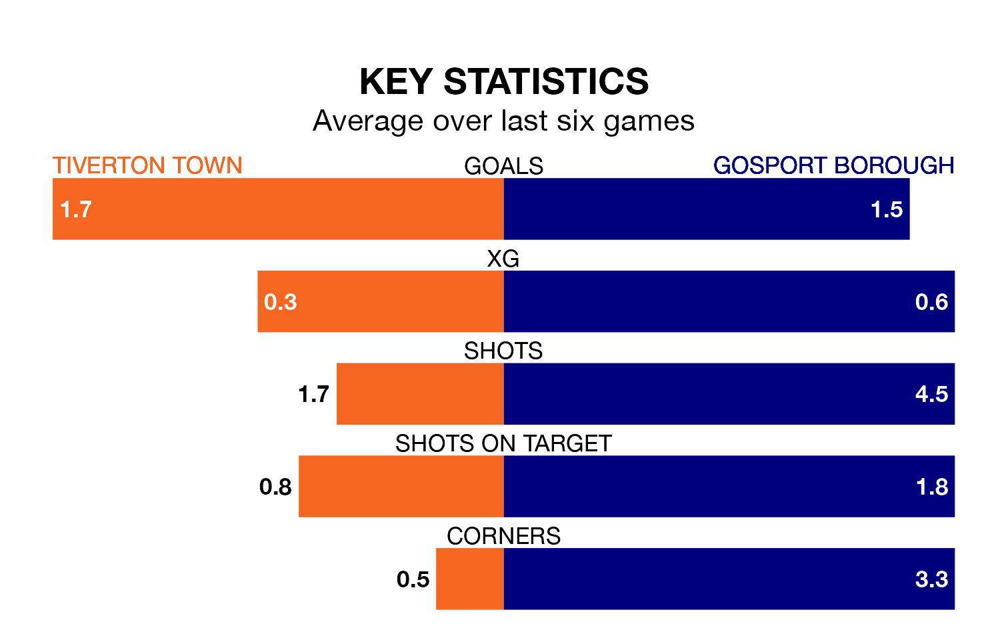

Relegation candidates Tiverton Town face a challenge against high-flying Gosport Borough at Ladysmead on Saturday.
Tiverton Town are 20th in the Southern League Premier – South table, and have picked up six wins and nine draws in their 29 games to date.
Gosport, meanwhile, are third in the standings with 58 points, having won 17 and drawn seven of their first 30 matches, and are 12 points behind table-toppers Chesham United.
With 56 goals in 30 games so far this season, Gosport are scoring more than average in the league with 1.9 goals per game. And they are conceding fewer than average, letting in 30 goals at a rate of 1.0 per game.
Tiverton, meanwhile, are below average scorers, with 1.6 goals per game, compared to a league average of 1.7. They have conceded 2.0 goals per game.
In the last 10 years, Tiverton and Gosport have played each other on nine occasions. Tiverton won five of them, Gosport three, and they drew once.
On average, Tiverton scored 1.8 goals and Gosport 1.0 in those matches.
Their last meeting was on October 21, when Gosport won 2-1 at home.
Town are in bad form in the Southern League Premier South, with one win and a draw from their last six games.
With three wins and two draws over that period, Borough's form is much better – they have taken 11 points from 18, compared to the home team's four.
Tiverton's last match was on February 17, a 2-0 loss against Walton and Hersham.
Gosport beat Hungerford Town 2-0 last time out, on Tuesday.
Updated: 10:08 (UTC), 23/02/24